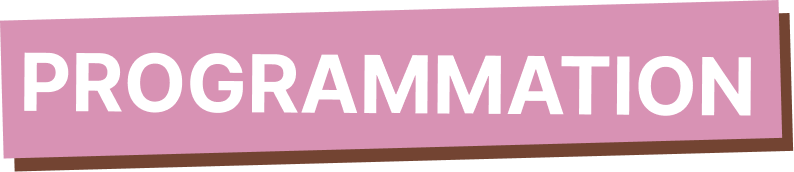

Mes favoris
Accueil
Programmation
Mes favoris
Autour de moi
Nos partenaires
Qui sommes-nous ?
Pour l'été

Vous n'avez pas encore sélectionné de programme favoris
Rendez-vous sur la programmation pour faire votre choix
00:00-00:00
Titre de l'événement
Sous-titre
Tag 1
Tag 2